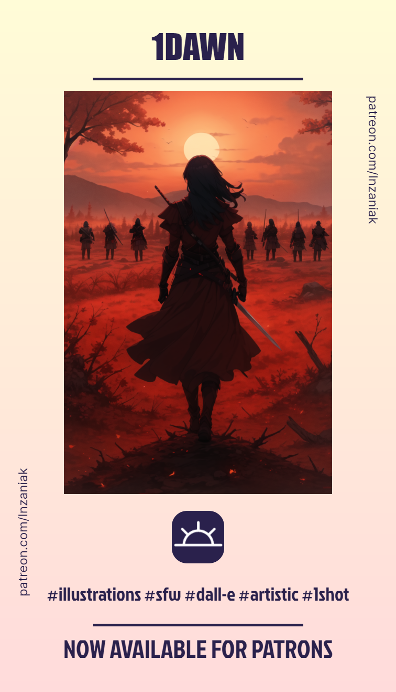
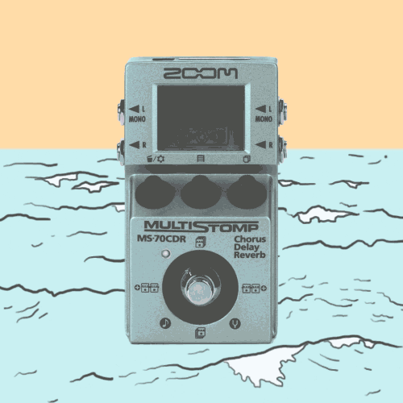

<div id="fh5co-main">
	<div class="fh5co-narrow-content">
		<h2 class="fh5co-heading animate-box" data-animate-effect="fadeInLeft">Stuff</h2>
		<div class="signal-list row-bottom-padded-md">
			<article class="blog-entry signal-row animate-box" data-animate-effect="digitalScan">
				<span class="signal-index">001</span>
				<a href="catalog.html" class="blog-img signal-thumb" aria-hidden="true" tabindex="-1">
					
				</a>
				<div class="desc signal-info">
					<span class="signal-meta"><small>Stable Diffusion</small> / <small>Generative AI</small> / <small>Browse</small></span>
					<h3><a href="catalog.html">SD Model Catalog</a></h3>
					<p>Explore my huge library of SD and SDXL custom LoRAs and checkpoints.</p>
				</div>
				<a href="catalog.html" class="signal-action" aria-label="Explore the SD Model Catalog">{% include icon.html name="arrow-right" %}</a>
			</article>

			<article class="blog-entry signal-row animate-box" data-animate-effect="digitalScan">
				<span class="signal-index">002</span>
				<a href="https://1drv.ms/u/s!AiVa732Ejl-Eg5QD3kUvs13MpUpGWQ?e=3uWOBv" class="blog-img signal-thumb" aria-hidden="true" tabindex="-1">
					
				</a>
				<div class="desc signal-info">
					<span class="signal-meta"><small>Serum</small> / <small>Patches</small> / <small>Download</small></span>
					<h3><a href="https://1drv.ms/u/s!AiVa732Ejl-Eg5QD3kUvs13MpUpGWQ?e=3uWOBv">Vintage Keys</a></h3>
					<p>17 key patches for Serum with a LoFi sound</p>
				</div>
				<a href="https://1drv.ms/u/s!AiVa732Ejl-Eg5QD3kUvs13MpUpGWQ?e=3uWOBv" class="signal-action" aria-label="Download Vintage Keys">{% include icon.html name="arrow-right" %}</a>
			</article>

			<article class="blog-entry signal-row animate-box" data-animate-effect="digitalScan">
				<span class="signal-index">003</span>
				<a href="https://1drv.ms/u/s!AiVa732Ejl-Eg5dCjdlk_YtGPtc7YA?e=CZ4u5E" class="blog-img signal-thumb" aria-hidden="true" tabindex="-1">
					
				</a>
				<div class="desc signal-info">
					<span class="signal-meta"><small>Zoom</small> / <small>Samples</small> / <small>Download</small></span>
					<h3><a href="https://1drv.ms/u/s!AiVa732Ejl-Eg5dCjdlk_YtGPtc7YA?e=CZ4u5E">Zoom on the Beach</a></h3>
					<p>12 pad samples made from sea noise combined with the Zoom MS-70CDR</p>
				</div>
				<a href="https://1drv.ms/u/s!AiVa732Ejl-Eg5dCjdlk_YtGPtc7YA?e=CZ4u5E" class="signal-action" aria-label="Download Zoom on the Beach">{% include icon.html name="arrow-right" %}</a>
			</article>
		</div>
	</div>
</div>
